Using VR
Requirements
Before using the VR functionality in AWSIM, you need to prepare a suitable VR headset and runtime environment. This section introudces the recommended devices.
Headset Selection
Depending on the usage mode, you can choose from the following two categories of devices:
PCVR (Direct GPU Connection via Cable)
-
Advantages
- Low latency and fast response, suitable for simulations requiring high performance.
- Accurate spatial tracking with stable head and hand motion capture.
-
Disadvantages
- Relatively lower resolution, image clarity is not as high as the latest standalone headsets.
- Most devices were released earlier and are now difficult to purchase.
-
Recommended Models
- HTC Vive Pro
- HTC Vive Pro Eye
- Valve Index
Info
Verified to work in Linux environments with good compatibility. Other PCVR devices may not work if Linux drivers are unavailable.
Standalone Headsets (Wireless/Wired Streaming)
-
Advantages
- Lightweight headset, easier to install and use.
- Widely available through multiple sales channels, more affordable and easier to purchase.
- No need for complex PC-side cable connections, offering greater flexibility.
-
Disadvantages
- Requires streaming software (ALVR) to connect with AWSIM.
- Tracking accuracy is generally lower than PCVR, and performance may be affected by lighting conditions in the environment.
-
Recommended Model
- Meta Quest 3
-
Streaming Software (ALVR)
- ALVR is an open-source VR streaming tool.
- Run ALVR Server on the PC and ALVR Client on the headset.
- Supports both wireless (Wi-Fi) and wired streaming.
Info
For other standalone devices, check the ALVR supported headset list. If listed as supported, the device should work in principle.
Installation
1. Install Steam
Steam is required in order to run SteamVR. Please make sure Steam is correctly installed first.
Setup
- Ensure you install the official Steam
.debpackage, not the Snap or Flatpak versions. - Official download page: https://store.steampowered.com/about/
-
Download the
.debfile and install it:
-
After installation, launch Steam from the terminal (
steam) or from your desktop environment, and log in with your account.
Infor
- SteamVR requires DRM leasing, which is only available on X11 or certain Wayland compositors.
- On Ubuntu with the default GNOME Wayland, SteamVR will not work.
- Workarounds:
- At the login screen, click the cog icon and select Ubuntu (X11) instead of Ubuntu on Wayland.
- Or install KDE Plasma and use Plasma (X11/Wayland):
For more details, please refer to the official Steam Support documentation:
Steam Support – Installing Steam on Linux
2. Install SteamVR
- Open the Steam client.
- In the Store, search for SteamVR.
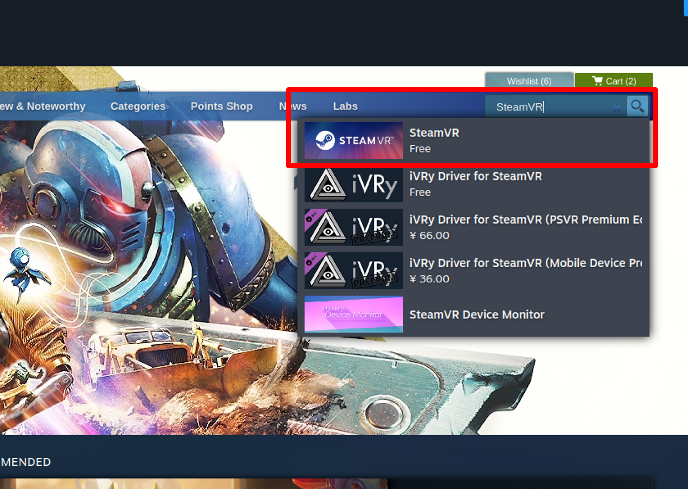
- Click Install and wait for the download to complete.
Infor
- In some cases, SteamVR may launch with a black screen. To fix this, set the following Launch Option in SteamVR properties:
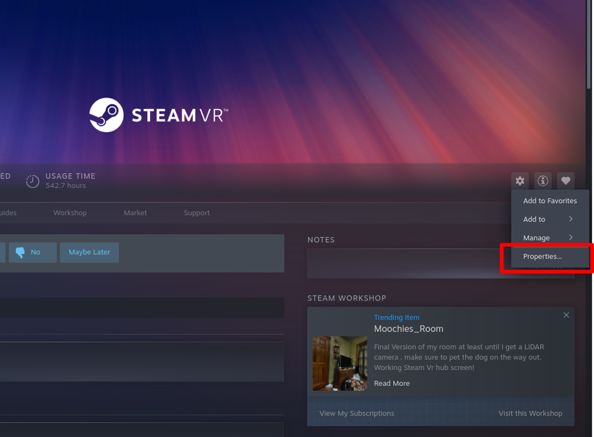
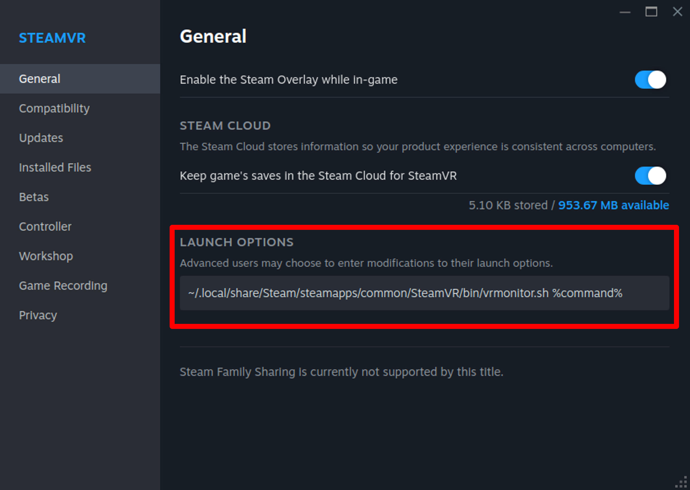
3. Install ALVR (for standalone headsets)
ALVR is an open-source streaming software that allows standalone headsets (e.g., Meta Quest 3) to run SteamVR content from your PC via wireless or wired streaming.
Setup
- Download alvr_launcher_linux.tar.gz from the ALVR release page.
- Extract it into a directory that:
contains only ASCII characters (English path), and is writable without administrator/root privileges. - Inside the extracted folder, run:
-
In the launcher UI, press Add version → keep the default channel and version → press Install.
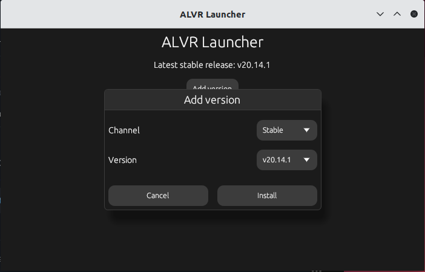
This will download and install the required components.
-
Once installation is complete, click Install APK to install the ALVR Client on your Quest headset.
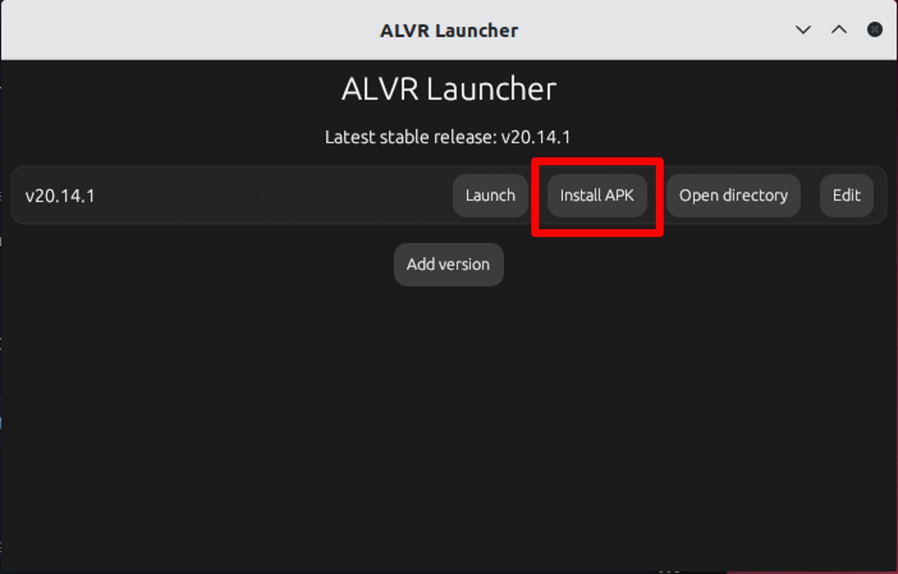
Info
Make sure developer mode is enabled on the headset.
Usage
-
In the ALVR Launcher, click Launch to start ALVR Server on your PC.
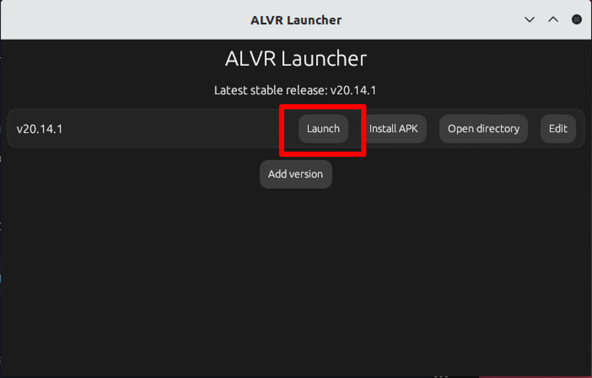
On the first launch, you will be guided through a setup wizard (firewall rules, permissions, etc.).
-
Start SteamVR (must already be installed).
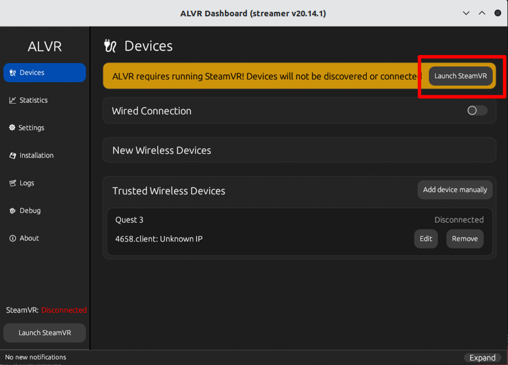
Info
On the first launch, SteamVR may appear blank and ALVR will not work. Close it and restart SteamVR — the ALVR driver will then be registered.
-
Launch the ALVR Client on your Quest headset.
-
While the headset screen is on, go to the Devices tab in ALVR Server and click Trust next to your device entry to establish the connection.
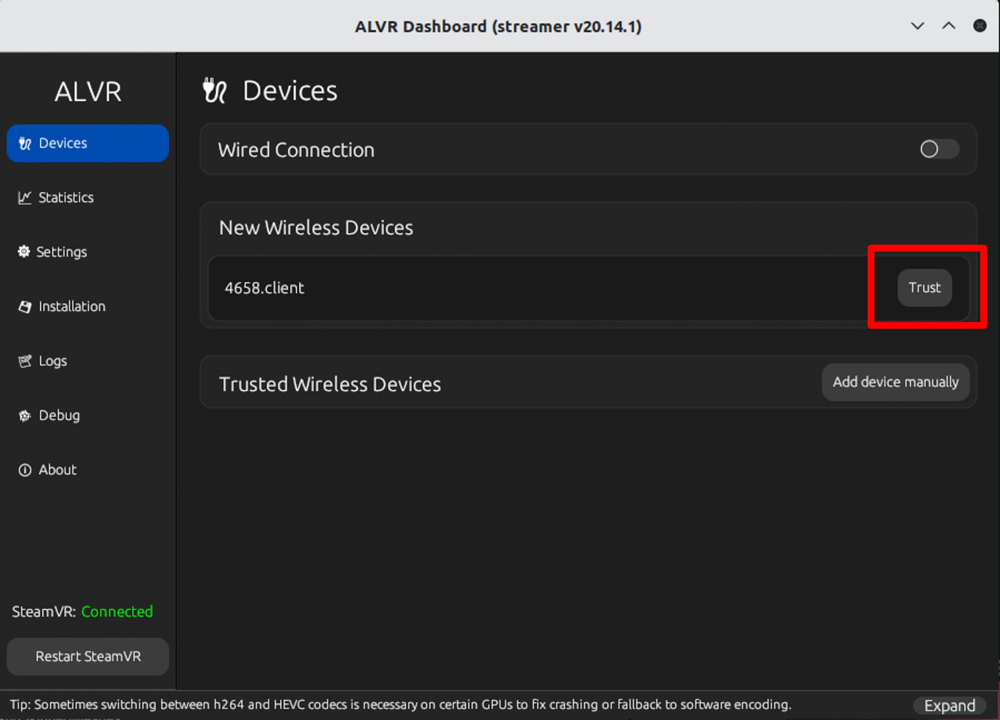
-
Once connected, the SteamVR output will be streamed to your headset.
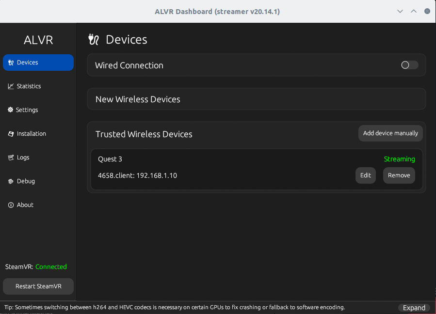
For more details, please refer to the official installation guide:
ALVR Installation Guide
Enable VR in AWSIM
To enable VR in AWSIM, you need to modify the configuration file.
Setup
- Open the
sample-config.jsonfile located in the AWSIM project. - Edit the following field:
-
When "UseVR": true A VR camera will be attached under the Ego vehicle. The default MainCamera will be disabled.
-
When "UseVR": false AWSIM will run in normal mode using the MainCamera.
Info
First-time Launch Notes
When starting AWSIM with VR enabled for the first time, SteamVR may display additional configuration prompts:
- First, a popup window will appear, informing you that no SteamVR Input actions have been generated yet and asking if you would like to open the SteamVR Input window. Select Yes here.
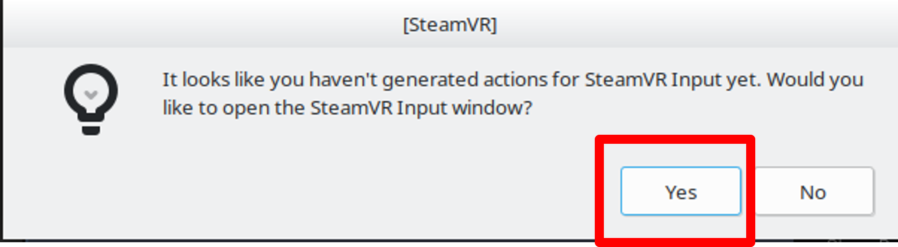
- Next, the SteamVR Input configuration window will open, showing the default Action Sets and input actions. At the bottom of the window, click Save and generate. The system will automatically create the default input bindings.
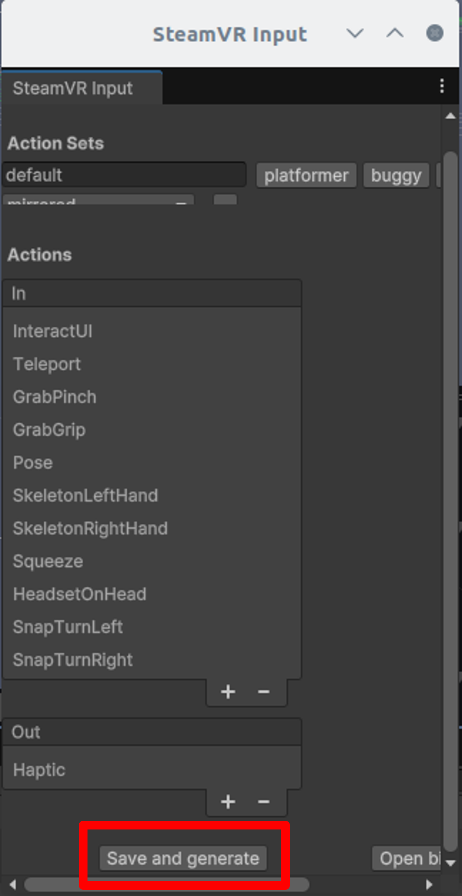
After completing these steps, SteamVR will save the input configuration, and you will not see this prompt again on subsequent launches.